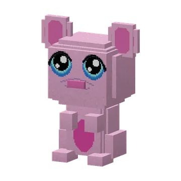

Your own room in Mother Vadsig's belly: a soft pink stomach you can furnish and make bigger. You get the belly whistle after her quest.
Je eigen kamer in de buik van Moeder Vadsig: een zachte roze maag die je kunt inrichten en laten groeien. Je krijgt het buikfluitje na haar quest.

Your own guh stomachJe eigen guhmaag
Every player can get their own guh stomach: a private pocket dimension inside a very, very big guh. It starts as a 48×48 room with soft pink stomach walls, half-digested kaasknabbel arches and bubbling stomach acid (only for the look — it doesn't hurt). Build whatever you like in it. To get one, you first have to help Mother Vadsig.
Elke speler kan een eigen guhmaag krijgen: een eigen zakdimensie in een heel, heel grote guh. Hij begint als een kamer van 48×48 met zachte roze maagwanden, half verteerde kaasknabbelbogen en borrelend maagzuur (alleen voor het zicht — het doet geen pijn). Bouw erin wat je maar wilt. Om er een te krijgen moet je eerst Moeder Vadsig helpen.
Getting aroundHeen en terug
- Blow the belly whistle or press G (change it in Controls → Guhs): you're in your stomach. Blow again (or press G) to go back to exactly where you were.Blaas op het buikfluitje of druk op G (aan te passen bij Besturing → Guhs): je bent in je maag. Blaas nog eens (of druk op G) om terug te gaan naar precies waar je was.
- In your stomach are two portals with signs: "naar de mond" (to the mouth) and "naar de darmen" (through the intestines: back to the world).In je maag staan twee portalen met bordjes: "naar de mond" en "naar de darmen" (terug naar de wereld).
- The mouth is the lobby everyone shares: a tongue floor between rows of teeth, with a portal to every player's stomach (with their name above it). Visit your friends!De mond is de lobby van iedereen: een tongvloer tussen rijen tanden, met een portaal naar de maag van elke speler (met zijn naam erboven). Ga bij je vrienden op bezoek!